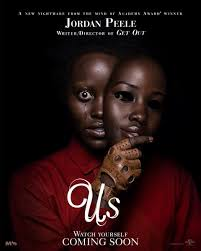
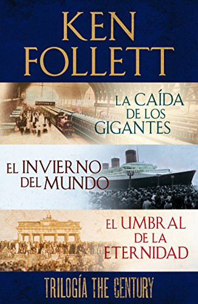

El profe nos dejo hacer un resumen de la pelicula que mas nos guste y de un libro .
Us:
La pelicula "Us" o en español "Nosotros" tambien es dirigida por el directo de Get out en esta pelicula nos presenta a una familia compuesta por los papas y dos hijos que van a una caja al lado de un lago durante su estadia en dicha casa empiezan a observar a una familia afuera de su casa el cual al noche siguente se dan cuenta que son identicos a ellos pero con excepcion de que son muy agresivos, la otra familia intenta matarlos, ellos observan que todos sus vecinos estan siendo asesinados por familias iguales a ellos. 
Ken Follet regresa con la trilogía The Century, donde combina la ambientación épica y el drama humano, sello distintivo en sus obras, a una escala nunca antes concebida, ni siquiera por él. Con la misma habilidad que en sus best sellers ambientados en la Edad Media, en The Century, sigue los destinos entrelazados de tres generaciones de cinco familias: una galesa, una inglesa, una rusa, una alemana y otra estadounidense. La primera novela, La caída de los gigantes, está enmarcada en los cruciales acontecimientos de la Primera Guerra Mundial y la Revolución Rusa. La siguiente se centra en la Segunda Guerra Mundial y la tercera, en la Guerra Fría. The Century narra en esencia el siglo XX y permite contemplar en primera persona una de las épocas más convulsas, violentas y determinantes de la historia. Una trama épica y apasionante, desde Washington hasta San Petersburgo, del peligro y oscuridad de las minas de carbón a los destellos de las lámparas de las mansiones de la aristocracia. La escala inicial de este viaje a lo largo del siglo XX, donde conocemos a la primera generación de los protagonistas: -Los Williams. Mineros de carbón en Gales. David es un hombre religioso, miembro activo del sindicato minero, estricto y amante de su familia. Billy y Ethel, sus hijos, lucharán con éxito por sus derechos y por la emancipación de la clase obrera y de las mujeres. -Los Fitzherbert. Aristócratas ingleses. El conde Fitzherbert, dueño de las minas y heredero de la gran mansión Ty Gwyn, está casado con una princesa rusa, Elizaveta, elitista y cruel. Lady Maud Fitzherbert es la hermana del conde y muy distinta de él. De ideas avanzadas, cree en la democracia y el sufragio universal. -Los Kostin. Los hermanos rusos Grigori y Leonid no pueden ser más opuestos. Grigori es serio y trabajador; Leonid, por el contrario, un libertino. Pero a ambos les une una infancia cruel. -Los Ulrich. Aristócratas alemanes muy bien relacionados. Robert trabaja en el servicio de inteligencia del Estado Mayor austríaco. -Los Dewar. Miembros de la alta sociedad estadounidense. Gus Dewar, hijo del senador Cameron Dewar, es asesor del presidente Wilson. 